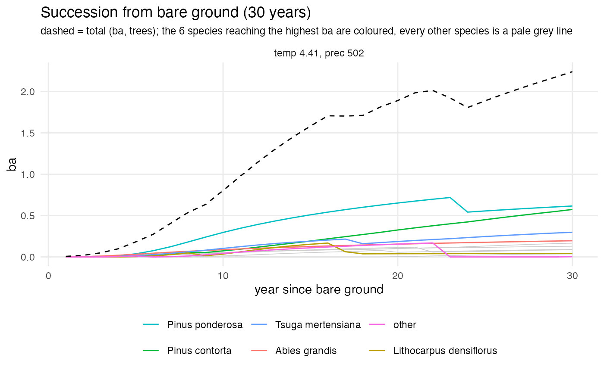

Simulates every site of env forward through its years, starting from the
trees in init_cohort (or from bare ground), with the model's current
parameters – usually after fit() has estimated them. Returns the
simulated stand variables and demographic rates per site, year and species,
and on request the individual cohorts. predict(model, ...) is the S3
method for the stats::predict generic; simulateForest() is the same
function under a name that says what it does.
Usage
# S3 method for class 'finn_class'
predict(
object,
env,
disturbance = NULL,
patches = 100L,
patch_size = NULL,
init_cohort = NULL,
device = c("cpu", "gpu"),
return_cohorts = FALSE,
debug = FALSE,
recruits = c("simulated", "observed"),
obs_recruits = NULL,
...
)
simulateForest(
model,
env = NULL,
disturbance = NULL,
patches = 100L,
patch_size = NULL,
init_cohort = NULL,
device = c("cpu", "gpu"),
return_cohorts = FALSE,
debug = FALSE,
recruits = c("simulated", "observed"),
obs_recruits = NULL,
bare_ground = FALSE,
years = 500L,
sites = NULL,
...
)Arguments
- object
- env
(
data.frame)
The environment of every site and simulated year: one row persiteIDandyear, plus one column per predictor, as infit(). Every row is one simulated step. See finn_data. Required, except insimulateForest()withbare_ground = TRUE: thereNULL(default) takes the environment the model was fitted on, and a table given is the one the mean climate is taken from.- disturbance
(
data.frameorNULL)
Optional disturbances: one row persiteIDandyearwith the columnintensity, the probability (0 to 1) that a patch of that site loses all its trees in that year. See finn_data.- patches
(
integer(1))
Number of patches per site when the simulation starts from bare ground (init_cohort = NULL). Not given: the patch count the model was fitted with (model$patches), or100for a model fitted before 0.2.0 or never fitted. Ignored, with a warning when it differs, as soon asinit_cohortis given: the patch count then comes from the initial cohorts.- patch_size
(
numeric(1))
Area of one patch in ha.NULL(default) takes the patch size the model was fitted with (model$patch_size_ha), or0.1for a model that was never fitted. A value that differs from the fitted one gives a warning: every per-hectare quantity changes with it.- init_cohort
(
CohortMat)
The trees every site starts with, frommakeInitCohorts().NULL(default) starts from bare ground withpatchesempty patches per site (a succession run): no stems, every tree comes from the regeneration process. See finn_data.- device
(
character(1))"cpu"or"gpu";"cuda"is accepted as a synonym for"gpu". Only NVIDIA cards are supported.- return_cohorts
Whether the individual cohorts are returned in addition to the site-level output. Storing cohorts every timestep is expensive, so the default is
FALSE(none). UseTRUE(or"all") for every timestep,"last"for the final timestep only, or an integer vector of timesteps to store just those. Recorded cohorts appear as$long$cohort/$wide$cohort.- debug
(
logical(1))
IfTRUE, the state of every cohort at every step is stored, with the intermediate quantities of the processes.- recruits
(
character(1))
Where the recruits come from."simulated"(the default) is the model's regeneration process."observed"feeds the observed recruitment inobs_recruitsinstead, asfit(loss_recruit = "observed")does, to check a model calibrated that way on the intervals it was calibrated on. With observed recruitment the model is not an autonomous simulator: every simulated year must lie in an observed interval, and a bare-ground, succession or projection run beyond them is refused. See recruitment for the unit chain.- obs_recruits
(
data.frame)
The observed recruitment forrecruits = "observed", required there and refused otherwise: a table like thedataoffit()withsiteID,year,species,regandperiod_length, rows for every species (0 where none recruited), the sites ofenvand years among those ofenv. Intervals map to simulated years exactly as in fit. AnNAregin an interval, a year in two intervals and a year in none are errors.- ...
Advanced options forwarded to the internal simulator, chiefly
batchsize(split the sites into batches of this many to cap memory for very large runs). The default processes all sites in one batch and is what almost all users want.- model
- bare_ground
(
logical(1))simulateForest()only:TRUEruns the model from an empty stand foryearsyears under a constant climate, the mean of every predictor over the environment the model was fitted on (or overenvwhen given); see Bare-ground runs in the details.init_cohortmust be left out (an error otherwise) anddisturbanceis ignored. DefaultFALSE.- years
(
integer(1))simulateForest()withbare_ground = TRUE: the length of the run in years. Default500.- sites
simulateForest()withbare_ground = TRUE:NULL(default) one run under the mean climate of all sites (siteID1 in the result), or site ids for one run per site under that site's mean climate (thesiteIDof the fitted environment, or ofenvwhen given, kept in the result).
Value
A named list of class finn_simulation, which plot.finn_simulation()
draws. $long$site (and $wide$site) give the site-level
results, averaged over the patches: columns siteID, year, species,
variable (dbh, ba, trees, growth, mort, reg, r_mean_ha) and
value; $wide$site has one column per variable instead. siteID is the
id used in env; year is the simulation step, counted from 1 (the k-th
year of a site's env is step k), whatever the values of env$year; the
years of env are kept as the attribute "env_years", with which
comparePlot() places observations. When return_cohorts is set, $long$cohort / $wide$cohort add
the per-cohort state (dbh, trees, species, growth g, mortality m,
...) for the requested timesteps.
Details
The simulation uses the environment of every row of env in turn; the
first row of a site drives the first step from init_cohort. env must be
in natural units: the standardisation learned by fit() is applied
automatically. A model that has not been fitted has no standardisation yet,
so it must be given env on the scale its processes expect; fit it first
(two epochs are enough for a trial).
Bare-ground runs. simulateForest(model, bare_ground = TRUE) builds the
environment itself: the model starts from an empty stand and runs for
years years under a constant climate, the mean of every predictor over
the environment the model was fitted on, or with sites one run per site
under that site's mean. It shows what the model does outside the
observation window; evaluate() stores such a run on the model.
See also
fit(), finn_data for the input tables, recruitment for
the recruitment options (recruits, obs_recruits),
plot.finn_simulation() to draw the result, comparePlot()
and evaluate() to compare it with observations
Examples
library(data.table)
# three Oregon FIA sites: estimate the parameters (two epochs, for the
# example), then simulate the sites over the years of `env` from the
# observed stands
sites <- 1:3
Nsp <- max(fia_obs_dt$species)
init <- makeInitCohorts(fia_init_trees[siteID %in% sites], Nspecies = Nsp)
FINN.seed(1)
m <- finn(N_species = Nsp, recruits_dbh = 12.9,
growth_process = createProcess(~ temp + prec, growth),
mortality_process = createProcess(~ temp + prec, mortality),
regeneration_process = createProcess(~ temp + prec, regeneration_capped))
fit(m, data = fia_obs_dt[siteID %in% sites], env = fia_env_dt[siteID %in% sites],
init_cohort = init, epochs = 2L, patches = 4, patch_size = 0.06,
plot_progress = FALSE)
#> ℹ weights: intercept-only baseline x your vector (dbh=0.00243, ba=12, trees=0.968, growth=1.84e+04, mortality=38.5, regeneration=0.768)
#> ℹ share of the objective at the intercept-only baseline (scaled): dbh=17%, ba=17%, trees=17%, growth=17%, mortality=17%, regeneration=17%
sim <- predict(m, env = fia_env_dt[siteID %in% sites], init_cohort = init,
return_cohorts = "last")
head(sim$long$site)
#> siteID year species variable value
#> <int> <int> <int> <fctr> <num>
#> 1: 1 1 1 dbh 81.02648
#> 2: 1 2 1 dbh 82.35995
#> 3: 1 3 1 dbh 83.59550
#> 4: 1 4 1 dbh 84.74102
#> 5: 1 5 1 dbh 85.80401
#> 6: 1 6 1 dbh 86.79163
# the cohorts of the final timestep, kept because of `return_cohorts`
head(sim$long$cohort)
#> siteID patchID year species cohortID variable value
#> <int> <int> <int> <int> <int> <fctr> <num>
#> 1: 1 1 22 11 1721 trees 1
#> 2: 2 1 22 1 1 trees 1
#> 3: 3 1 22 2 5 trees 1
#> 4: 1 2 22 11 8 trees 1
#> 5: 2 2 22 1 1209 trees 1
#> 6: 3 2 22 2 1 trees 1
# a 50-year succession from bare ground, with the climate of year 1 repeated
succession <- fia_env_dt[siteID %in% sites & year == 1][rep(1:3, each = 50)]
succession[, year := rep(1:50, times = 3)]
#> siteID year temp tempmax tempmin prec precseas precwarmq
#> <int> <int> <num> <num> <num> <int> <num> <int>
#> 1: 1 1 3.958333 24.7 -10.4 547 30.04612 101
#> 2: 1 2 3.958333 24.7 -10.4 547 30.04612 101
#> 3: 1 3 3.958333 24.7 -10.4 547 30.04612 101
#> 4: 1 4 3.958333 24.7 -10.4 547 30.04612 101
#> 5: 1 5 3.958333 24.7 -10.4 547 30.04612 101
#> ---
#> 146: 3 46 5.441667 27.4 -10.7 404 33.62511 63
#> 147: 3 47 5.441667 27.4 -10.7 404 33.62511 63
#> 148: 3 48 5.441667 27.4 -10.7 404 33.62511 63
#> 149: 3 49 5.441667 27.4 -10.7 404 33.62511 63
#> 150: 3 50 5.441667 27.4 -10.7 404 33.62511 63
sim50 <- simulateForest(m, env = succession, patches = 4)
sim50$long$site[variable == "ba", .(ba = sum(value)), by = .(siteID, year)][year %in% c(10, 50)]
#> siteID year ba
#> <int> <int> <num>
#> 1: 1 10 0.3173305
#> 2: 1 50 2.6052462
#> 3: 2 10 0.2845667
#> 4: 2 50 2.5170323
#> 5: 3 10 0.9084752
#> 6: 3 50 2.0007858
# the same kind of run in one call: from an empty stand under the mean
# climate of the fitted environment, held constant
bare <- simulateForest(m, bare_ground = TRUE, years = 30)
plot(bare)
